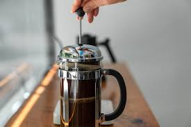

French Press
The French press, also known as a press pot or plunger pot, is a popular brewing method. Here's a simple guide:
- Coarsely grind coffee beans.
- Add coffee grounds to the French press.
- Heat water to just below boiling.
- Pour hot water over the coffee grounds.
- Let it steep for about 4 minutes.
- Press the plunger down slowly.
- Pour and enjoy your coffee!